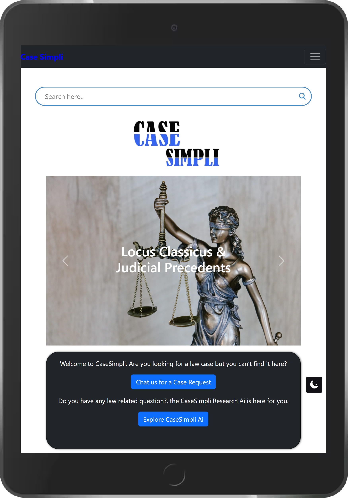
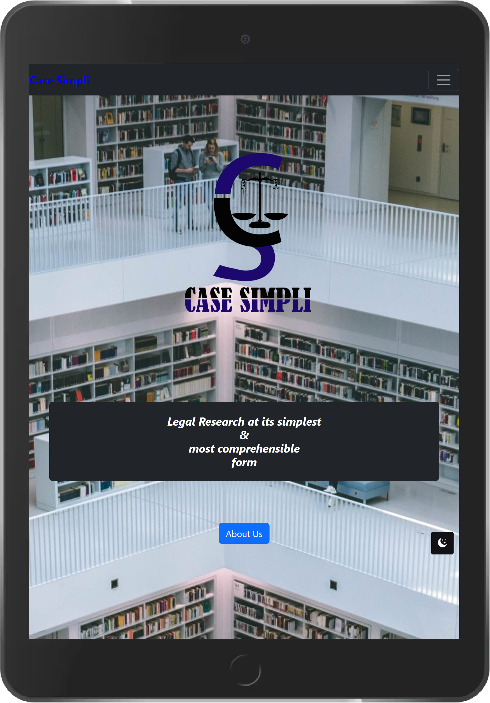
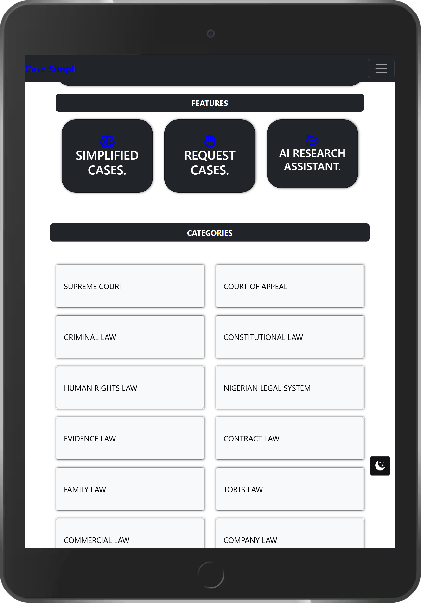
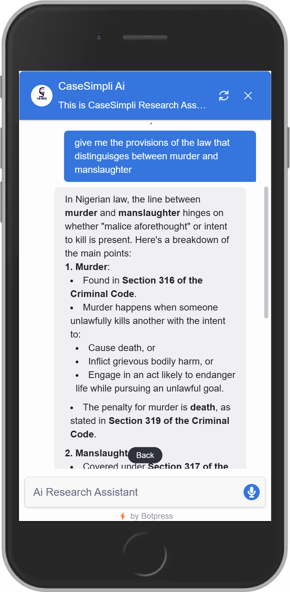
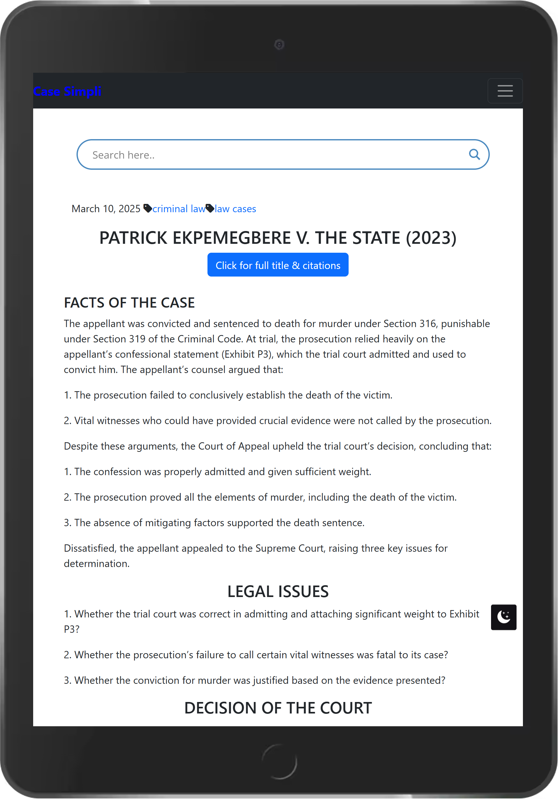

CaseSimpli — Making legal research simpler and more efficient
Founded as a 400-level law student to eliminate the stressful friction of traditional legal research. Transformed personal observation and peer research into a streamlined platform with structured precedent breakdowns and AI-powered statutory assistance.
Real-world adoption across partner law student bodies in 10+ Nigerian universities.
The Founder Origin: I founded CaseSimpli as a 400-level law student after experiencing first-hand how time-consuming, stressful and cumbersome legal research could be. After discovering that the problem extended beyond my own experience, I built CaseSimpli to make legal materials easier to access and understand, while using AI to make the research process more efficient.

The Problem
During my fourth year in law school (400-level), I experienced the relentless friction involved in conducting legal research. Finding relevant judicial precedents meant sifting through hundreds of pages of unindexed law reports, dense judgments, and archaic language under strict academic and litigation deadlines.
Observing fellow law students and colleagues, I realized they shared the exact same struggle: hours lost searching for the locus classicus, difficulty isolating the specific ratio decidendi, and constant fatigue from cumbersome repositories.

From Personal Problem to Product Opportunity
Instead of assuming my personal frustration was unique, I investigated whether the friction was widespread across faculties and institutions. Through targeted outreach, we partnered with law student bodies across more than 10 universities in Nigeria, validating the acute demand for accessible legal research and creating a trusted student-led distribution network.
The Product
CaseSimpli was designed to make legal materials direct, readable, and structured. Key product capabilities included:
- Structured Case Summaries: Clean breakdowns isolating Facts of the Case, Legal Issues, and Decision of the Court.
- 12 Curated Legal Domains: Categorized navigation across Supreme Court, Court of Appeal, Criminal Law, Constitutional Law, Human Rights, Evidence, Contract, Torts, Commercial Law, and Company Law.
- On-Demand Case Requests: Direct user request flow allowing researchers to ask for specific unindexed judicial precedents.
- CaseSimpli AI Assistant: Conversational legal assistant capable of clarifying statutory distinctions and pointing to relevant statutory provisions.

Why AI?
AI was introduced strictly as a capability to reduce friction within the research workflow—never as a gimmick. The goal was to help users query complex legal principles in natural language (e.g., distinguishing between murder and manslaughter provisions under the Criminal Code) and receive structured, digestible syntheses instantly.
AI did not attempt to replace legal counsel or fabricate judicial authority; instead, it acted as an intelligent retrieval and synthesis layer guiding researchers to relevant statutory sections and doctrines.


My Role
As the Founder & Builder of CaseSimpli, I was responsible for the end-to-end product lifecycle: